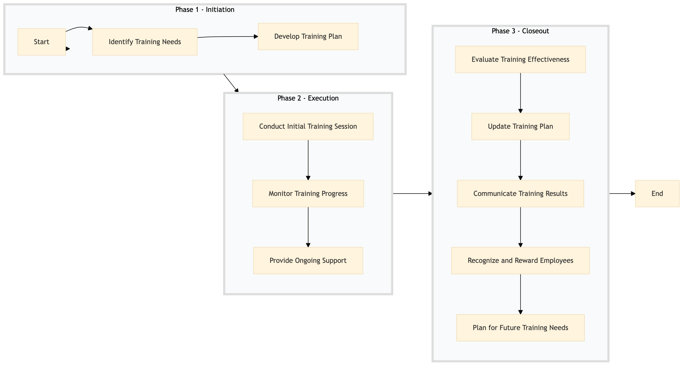

| Role | Steps |
|---|---|
| Human Resources Manager | 1.1 3.1 3.4 3.5 |
| Learning & Development Specialist | 1.2 2.2 3.2 3.3 |
| Training Instructor | 2.1 |
| Supervisor | 2.3 3.3 |
| Step | Name | Role | System | Input | Output | KPI | Dec? | Exc? | Pain Point / Risk |
|---|---|---|---|---|---|---|---|---|---|
| 1.1 | Identify Training Needs | Human Resources Manager | Oracle OPERA Cloud | Annual performance reviews, employee feedback forms | Training needs assessment report | Less than 2 hours per department | N | Y | Accurately identifying skill gaps across different departments. |
| 1.2 | Develop Training Plan | Learning & Development Specialist | Oracle OPERA Cloud, Workday HCM | Training needs assessment report | Cross-training and skill development plan | Less than 1 week | N | Y | Aligning training content with Marriott's operational standards. |
| 2.1 | Conduct Initial Training Session | Training Instructor | Book4Time, Oracle OPERA Cloud | Cross-training and skill development plan | Training session attendance record | Less than 2 hours per session | N | Y | Engaging all participants in the training sessions. |
| 2.2 | Monitor Training Progress | Learning & Development Specialist | Oracle OPERA Cloud, Workday HCM | Training session attendance record | Progress report | Less than 1 day per month | Y | N | Tracking individual progress and providing timely feedback. |
| 2.3 | Provide Ongoing Support | Supervisor, Training Instructor | Oracle OPERA Cloud, Microsoft Power BI | Progress report | Support documentation | Less than 1 hour per week per employee | N | Y | Ensuring continuous learning and application of new skills. |
| 3.1 | Evaluate Training Effectiveness | Human Resources Manager, Learning & Development Specialist | Oracle OPERA Cloud, Workday HCM | Support documentation | Training effectiveness report | Less than 1 week per quarter | Y | N | Measuring the impact of training on operational performance. |
| 3.2 | Update Training Plan | Learning & Development Specialist | Oracle OPERA Cloud, Workday HCM | Training effectiveness report | Updated cross-training and skill development plan | Less than 1 week per quarter | N | Y | Adapting training programs to evolving operational needs. |
| 3.3 | Communicate Training Results | Human Resources Manager, Learning & Development Specialist | Oracle OPERA Cloud, Workday HCM | Training effectiveness report | Communication plan | Less than 1 day per quarter | N | Y | Effectively communicating training outcomes to all stakeholders. |
| 3.4 | Recognize and Reward Employees | Human Resources Manager, Supervisor | Oracle OPERA Cloud, Workday HCM | Training effectiveness report | Recognition program plan | Less than 1 week per quarter | N | Y | Motivating employees through recognition and rewards. |
| 3.5 | Plan for Future Training Needs | Human Resources Manager, Learning & Development Specialist | Oracle OPERA Cloud, Workday HCM | Training effectiveness report | Future training needs plan | Less than 1 week per quarter | N | Y | Forecasting and planning for future skill development needs. |
A structured process document for cross-training and skill development at a Marriott full-service hotel using Oracle OPERA Cloud PMS and other key Marriott systems.